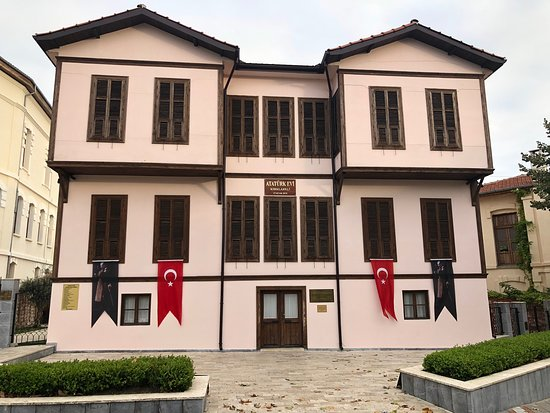
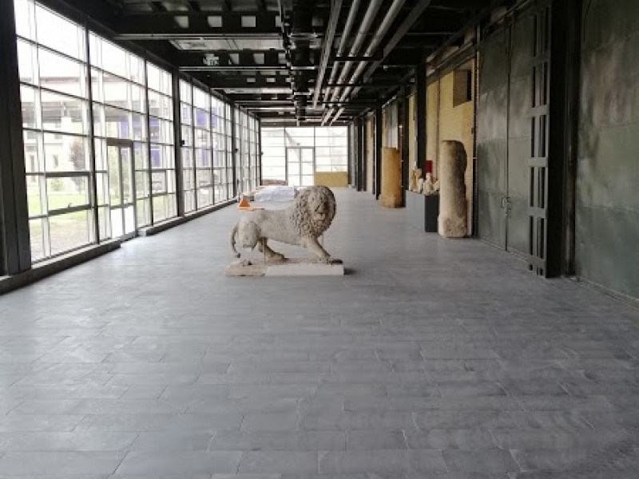
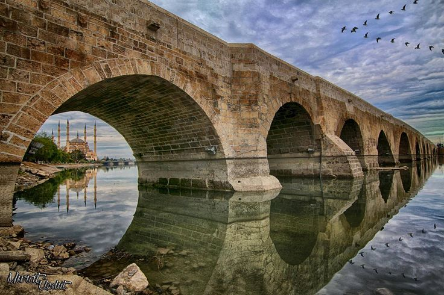
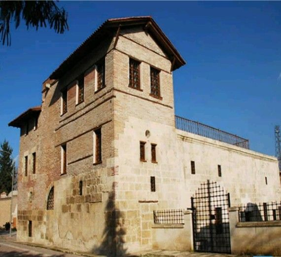
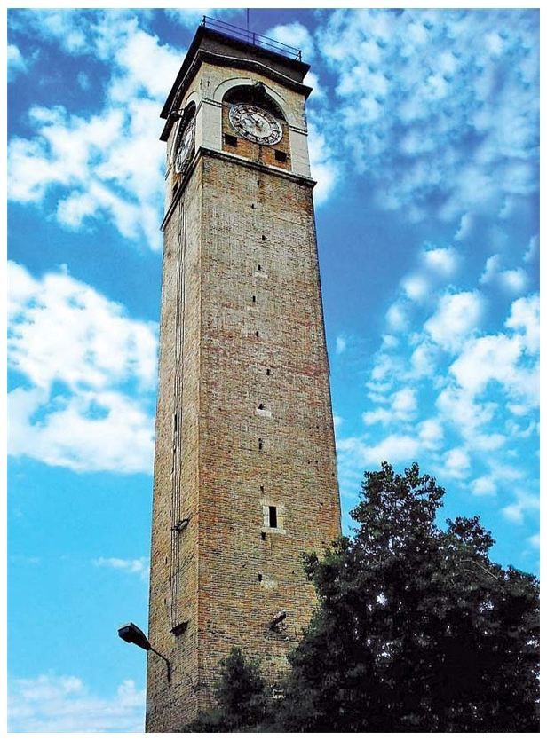
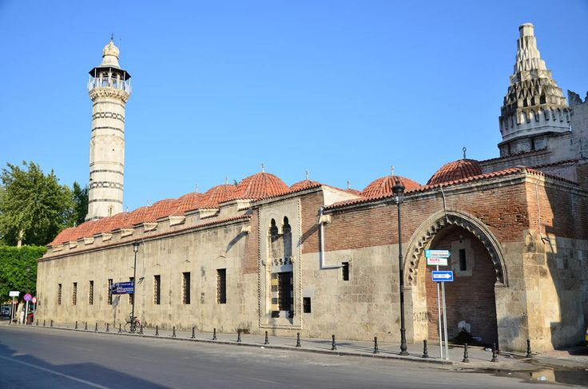
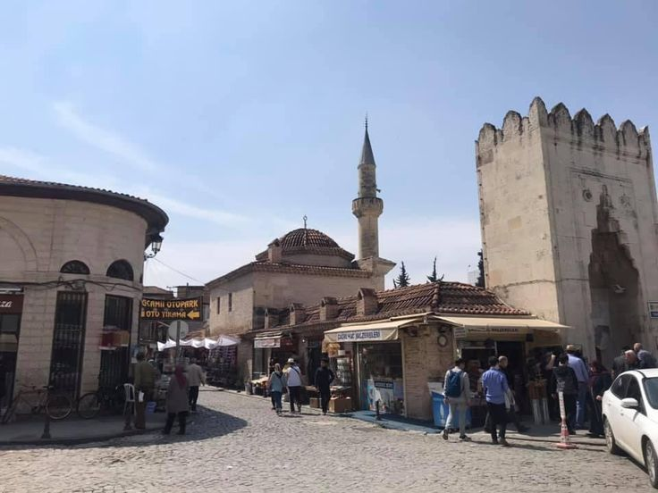
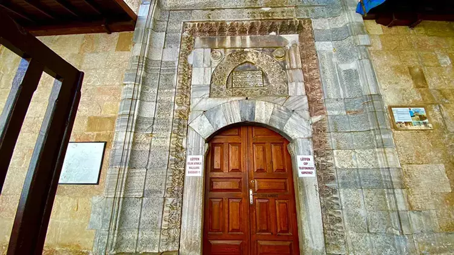

Adana Kültürel Yerler
Çukurova'nın incisi
Müzeler

Adana Arkeoloji Müzesi
Çukurova bölgesinin zengin arkeolojik eserlerini sergileyen müze.

Atatürk Evi
Mustafa Kemal Atatürk'ün Adana'da kaldığı tarihi ev.

Etnografya Müzesi
Adana'nın kültürel mirasını yansıtan etnografik eserler.
Tarihi Yapılar

Taşköprü
Roma döneminden kalma tarihi köprü.

Ramazanoğlu Konağı
16. yüzyıldan kalma tarihi konak.

Büyük Saat Kulesi
1882 yılında inşa edilen tarihi saat kulesi.
Tarihi Camiler

Ulu Cami
Adana'nın en eski ve en büyük camisi.

Yağ Camii
Kiliseden camiye dönüştürülmüş tarihi yapı.

Akça Mescit
14. yüzyıldan kalma tarihi mescit.